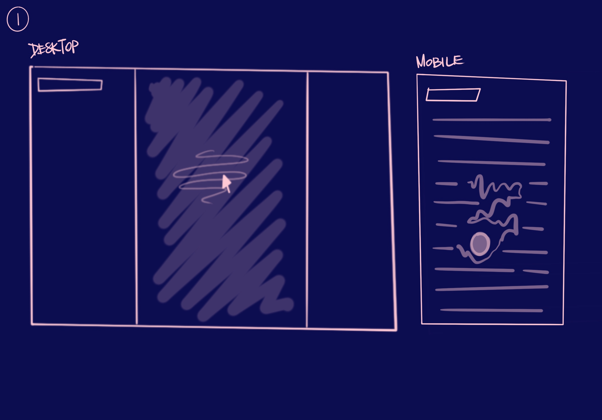
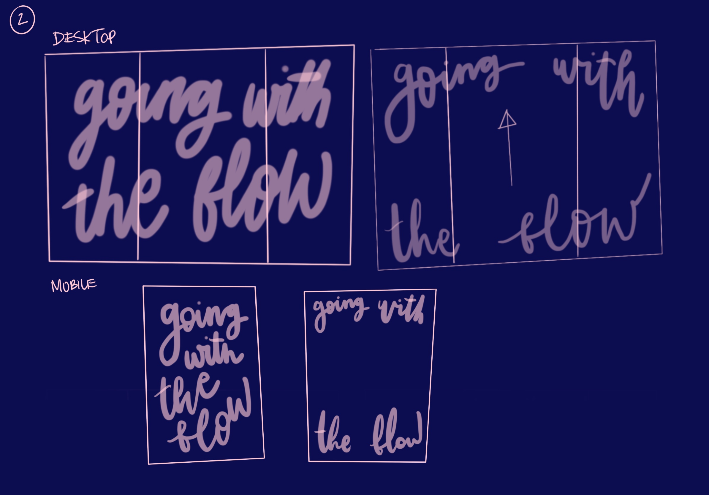
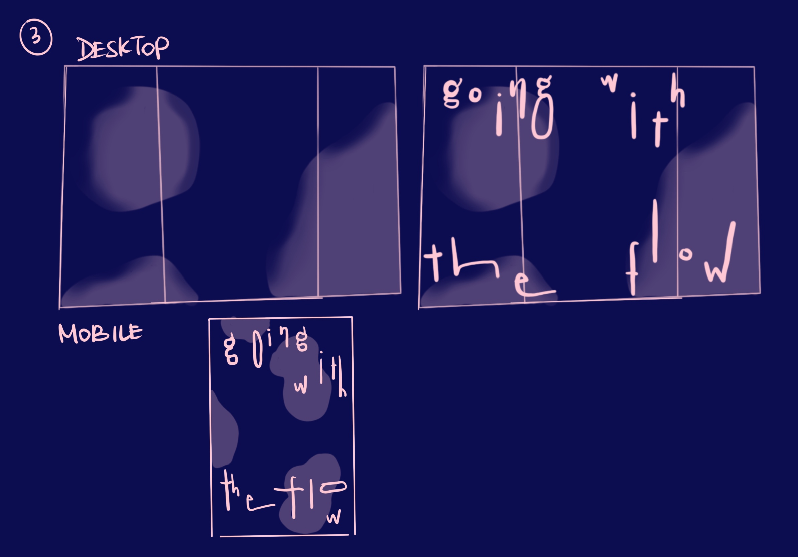

Part 2
Art Direction 1

For this concept, wherever the mouse hovers over the words, the text will either shake, merge, blend or overlap. I haven't decided exactly what motion the text will make yet, but this motion is in reference to "bleeding" and "flow." Inspiration idea can be found from schemasofuncertainty.com
Art Direction 2

For this idea, the landing page and when the page is idle, the title of the reading will cover the entire screen in an organic, flowy typeface. When the site is able to detect movement in the mouse or when scrolled, the title will fly to the corners of the screen, revealing the body text. This bold typography alludes to the tone of voice of the author: unapologetic and confrontational. Inspiration idea can be found from yaleschoolofart.org./openstudios2019
Art Direction 3

As you read the text, the background has gradient color blobs that move as you scroll or move around the website. Meanwhile, the title emulates a lava lamp in its shape and movement as it bounces in a liquid manner vertically on the screen. This is inspired by the topic of menstruation and flow. Inspiration can be found from websites like: dice.berlin and wholefestival.com
Part 3

I ended up deciding to go with direction 1 because it had most direct correlation between how the actual typography responds to the content. For the landing page, I made a mockup of how the page would look like static. However, users will be able to move it in a liquid way when they hover over the text as seen in this tutorial: Liquid Distortion.

When the user clicks into the title from the homepage, it will lead them to a page with the full text where the liquid distortion will also affect all the words.